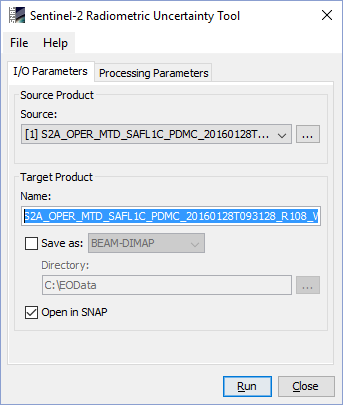
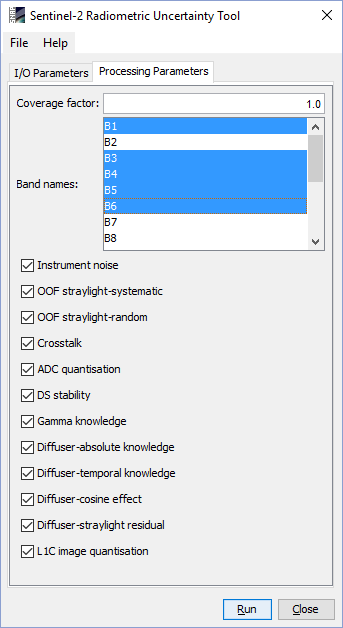

| S2-RUT Processor Documentation | |
The S2-RUT processor can be invoked in the Sentinel Toolbox from the menu by selecting
Optical->Preprocessing->Sentinel-2 Radiometric Uncertainty Tool.
On the command line processor is available by means of the Graph Processing Tool gpt
which is located in the Sentinel Toolbox bin directory.
Typing gpt S2Rut -h displays further information.
Selecting the Sentinel-2 Radiometric Uncertainty Tool command from the Sentinel Toolbox menu opens up the following dialog:

Source product: Here the user specifies the source product. The combo box presents a list of all products opened in the Sentinel Toolbox. The user may select one of these or, by clicking on the button next to the combo box, choose a product from the file system. The selected product must be of type S2_MSI_Level-1C.
Name: Used to specify the name of the target product.
Save as: Used to specify whether the target product should be saved to the file system. The combo box presents a list of available file formats. The text field or the button next to it allow to specify a target directory.
Open in SNAP: Used to specify whether the target product should be opened in the Sentinel Toolbox. When the target product is not saved, it is opened in the Sentinel Toolbox automatically.

Coverage factor: The value of the coverage factor for the uncertainty evaluation (k=1 means 68.27% probability):
Band names: Select the bands for which the uncertainty shall be computed.
Instrument noise: Noise (shot, thermal, etc.) introduced by the silicon and CMT detectors of the MSI instrument
OOF straylight-systematic: Telescope Out-Of-Field light that results in a positive bias
OOF straylight-random: Focal plane Out-Of-Field light that results in a random spatial dispersion
Crosstalk: Focal plane (Optical) and Front-End Electronics (electrical) inter-band signal
ADC quantisation: Analog to Digital conversion at the Video Chain Unit on-board the MSI
DS stability: Residual thermal fluctuations of the detector offset along the orbit
Gamma knowledge: Knowledge on te correction for non-linearity and non-uniformity
Diffuser-absolute knowledge: Knowledge on the diffuser reflectance factor (BRF)
Diffuser-temporal knowledge: Estimated effect of the diffuser degradation in space
Diffuser-cosine effect: Cosine correction knowledge as a consequence of angular noise TBD
Diffuser-straylight_residual: Residual for the correction of the stray-light during in-flight diffuser calibration
L1C image quantisation: Effect of the finite resolution of the L1C reflectance factor